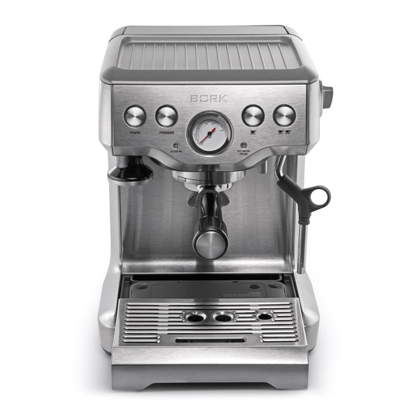
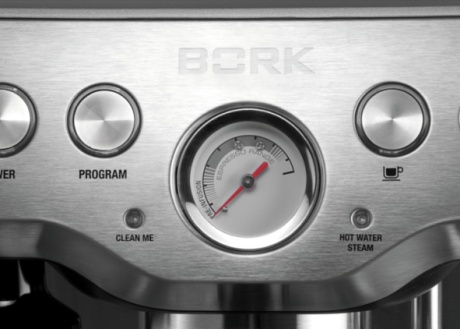
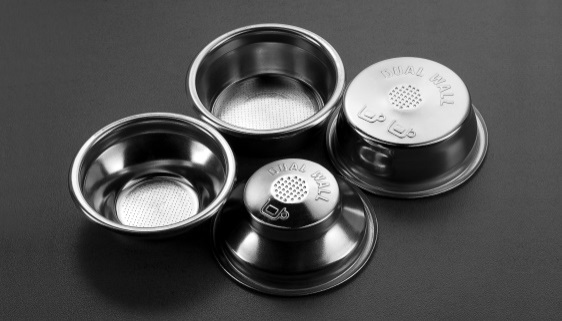
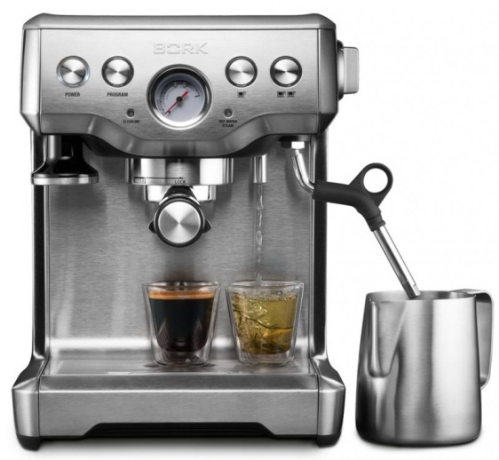
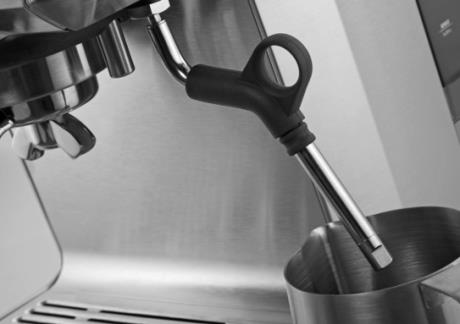

BORK C803
Технические характеристики

Мощность: 1500-1750 Вт
Давление: 15 бар
Вес: 8.2 кг
Материал корпуса: нержавеющая сталь
Емкость съемного бака для воды: 1.8 л
Емкость поддона для капель: 0.6 л
Длина электрического кабеля: 1 м
Срок гарантии: 2 года
Особенности
Предварительное заваривание
Перед приготовлением через кофе пропускается горячая вода при пониженном давлении (60 % от максимальной потребляемой мощности помпы) в течение 7-ми секунд. Это позволяет добиться оптимальной плотности кофейной таблетки для идеальной экстракции.
Подача горячей воды
Функция позволяет разбавить слишком крепкий кофе, приготовить классический американо или заварить чай.
Максимальный объем – 250 мл. Подачу горячей воды нельзя осуществлять одновременно с приготовлением кофе.
Автоматическая функция стабилизации температуры воды
Мощный нагревательный элемент и помпа с давлением 15 бар
Функция программирования объема кофе
Позволяет сохранить в памяти персональные настройки объема эспрессо для приготовления одной или двух чашек кофе.
Фильтры с одинарным и двойным дном
Пресс для утрамбовки кофе
Позволяет утрамбовывать молотый кофе, не снимая пресс с кофеварки, а также идеален для ручной утрамбовки.
Возможность приготовления капучино
Панель для подогрева чашек
Фманометр
Пенал для хранения принадлежностей
КАПУЧИНАТОР
Вращается на 360°.
Цикл полной очистки
Облегчает процесс ухода за кофеваркой даже в условиях использования жесткой воды и избавляет от необходимости промывать детали кофеварки вручную.